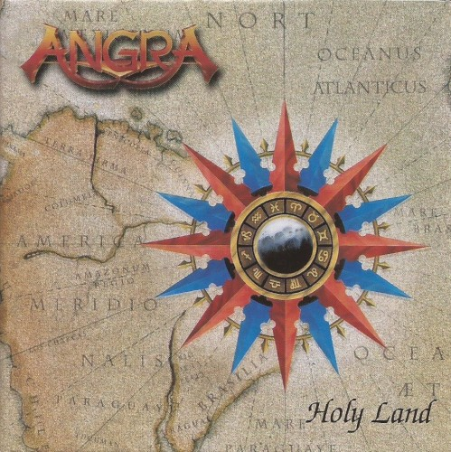

Holy Land
Elenco
- Andre Matos — vocals, keyboards
- Kiko Loureiro — guitars
- Rafael Bittencourt — guitars
- Luis Mariutti — bass
- Ricardo Confessori — drums
Sobre o álbum
Holy Land é o segundo álbum de estúdio da Angra, lançado em março de 1996 e considerado por
muitos críticos e fãs como a obra-prima da banda. Diferentemente de Angels Cry, que adotou
um som mais europeu sob a produção de Charlie Bauerfeind, este disco volta ao Brasil —
misturando power metal, música erudita, ritmos afro-brasileiros, percussão indígena e
referências históricas à descoberta e colonização do território. A capa, quando totalmente
aberta, revela um mapa do século XV, reforçando o conceito de "terra santa" vista pelo
olhar europeu. Repetiu o sucesso comercial do predecessor, conquistando disco de ouro no
Brasil e alcançando a 17ª posição no Oricon japonês.
Gravação
O repertório foi escrito em 1995 durante cerca de quatro meses de isolamento numa fazenda
em Tapiraí (SP), concluído na propriedade do baterista Ricardo Confessori. A gravação
principal ocorreu entre meados de 1995 e início de 1996 em Hansen Studio (Hamburgo),
Big House Studios (Hanôver) e HG Studio (Wolfsburg), na Alemanha. Vocais, piano e órgão
foram registrados no Vox Klangstudio (Bendestorf). Overdubs com instrumentos brasileiros
— percussão, flauta, viola, berimbau, contrabaixo acústico e coros — foram feitos no
Djembe Studio (São Paulo), entre agosto e outubro de 1995. Produção de Bauerfeind e
Sascha Paeth; mixagem por Bauerfeind em janeiro de 1996. Participações especiais incluem
arranjos orquestrais de Paeth, flauta de Paulo Bento, berimbau de Pixu Flores e coros
do Farrambamba Vocal Group.
Conceito
Álbum-conceito sobre o Brasil antes e durante a chegada dos colonizadores portugueses,
narrado sob perspectiva europeia e indígena. A abertura "Crossing" cita Palestrina;
faixas como "Nothing to Say" e "Carolina IV" evocam conquista, culpa e navegação;
"Holy Land" e "The Shaman" dialogam com espiritualidade nativa; "Z.I.T.O." (Zona de
Interesse Turístico e Outros) critica a modernidade; "Deep Blue" e "Lullaby for Lucifer"
fecham o ciclo com melancolia e inocência perdida. O resultado é um marco do folk/progressive
metal que funde erudição, identidade brasileira e virtuosismo.
Recepção
Holy Land recebeu aclamação quase unânime na imprensa especializada nacional e internacional.
Roadie Metal e Sputnikmusic elogiaram a ambição conceitual e a fusão de metal com percussão
brasileira. Metal Storm inclui o disco entre os 100 melhores álbuns de power metal. Com o
tempo, consolidou-se como referência do gênero e influenciou gerações de bandas brasileiras.
Faixas
- 1. Crossing 0/10 1:57 Instrumental
- 2. Nothing to Say 10/10 6:24
- 3. Silence and Distance 5/10 5:35
- 4. Carolina IV 5/10 10:37
- 5. Holy Land 4/10 6:28
- 6. The Shaman 2/10 5:25
- 7. Make Believe 6/10 5:55
- 8. Z.I.T.O. 4/10 6:06
- 9. Deep Blue 1/10 5:50
- 10. Lullaby for Lucifer 3/10 2:42
Referências
- Holy Land (album) — Wikipedia (article)
- Holy Land — MusicBrainz (database)
- Holy Land, a obra-prima definitiva da carreira do Angra — Igor Miranda (article)